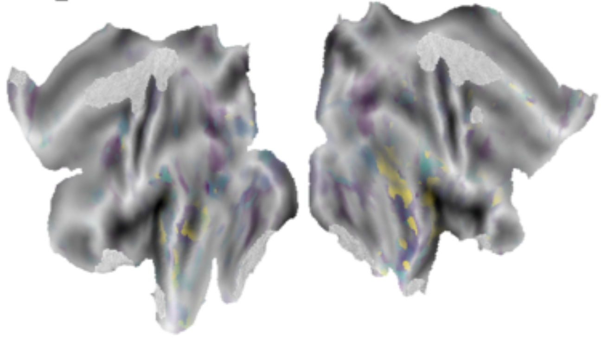

Overall Aim: To generate cortical parcellations using naturalistic (movie viewing) neuroimaging datasets.
Part of: Neuroscout
Specific goals:
Team Members: Jeff Mentch, Satra Ghosh
Collaborators: Neuroscout Team, Peer Herholz
To date, much of what we know about the brain comes from highly constrained experiments using classical task paradigms. While this has led to numerous breakthroughs, in everyday life we perceive dynamic, multisensory information in the naturalistic setting of the world. In recent years, the use of naturalistic stimuli such as rich audiovisual movies has increasingly gained momentum in fields like neuroimaging using fMRI. While this has helped us to better understand how the brain may be operating in response to more complex real-world stimuli, many questions remain open such as: how do we extract meaningful features from naturalistic stimuli and relevant neural dynamics from noisy fMRI signal? How do we then interpret and relate these dynamic features across timescales, contexts, and in different clinical populations?